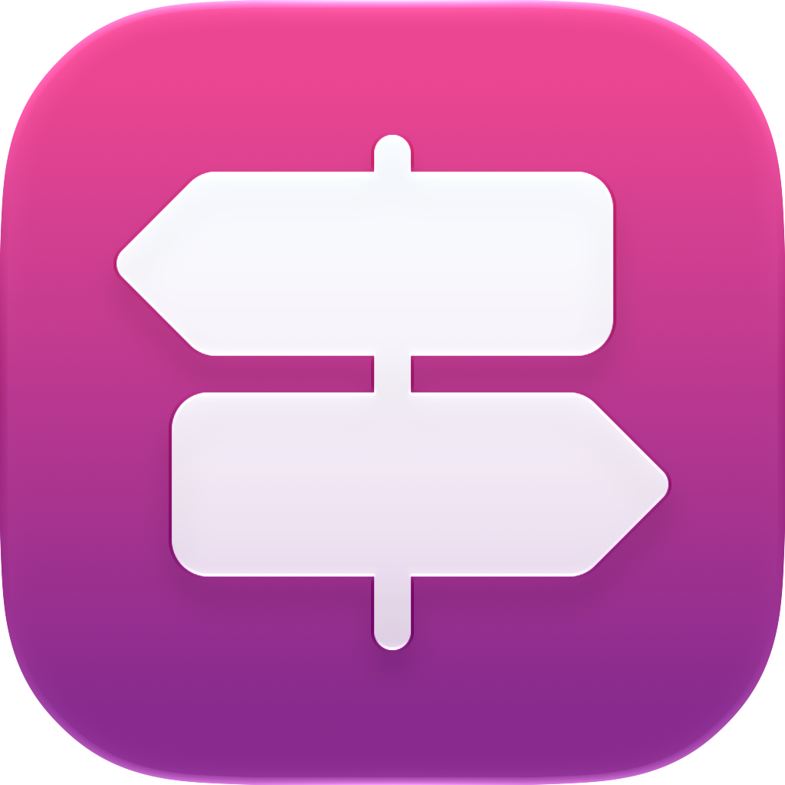
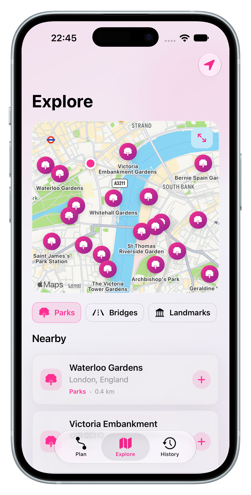
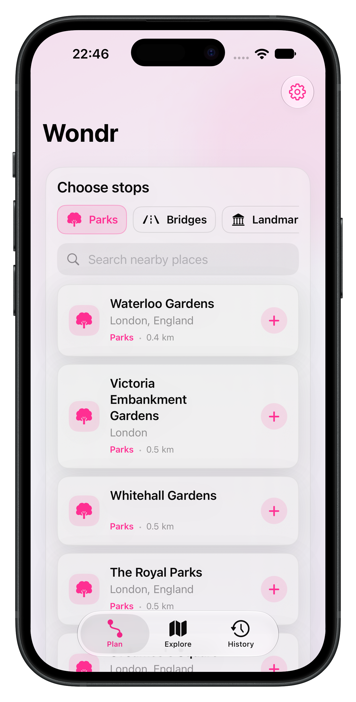

01
Start with nearby
Choose parks, landmarks, food, bridges, or anywhere else that makes a good excuse to go.

wondr Start exploringA better reason to go outside
Wondr turns the places around you into walks and cycles worth taking — with a little more intention and a lot less planning.

The Wondr way
Wondr gives your free time just enough shape to make leaving the house feel easy.
Choose parks, landmarks, food, bridges, or anywhere else that makes a good excuse to go.
Pick a walk or cycle, make it a loop, and tune the feeling with scenic or fastest preferences.
Save routes, replay them when the mood strikes, and build a history of time well spent.

A softer kind of productivity
There’s no feed to scroll and no leaderboard to chase. Wondr is a small nudge toward the places and moments you might otherwise miss.